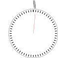
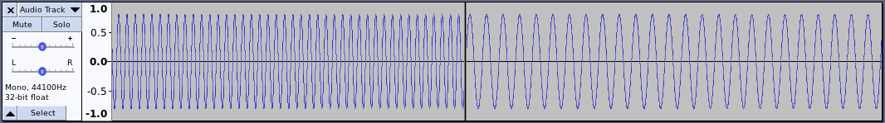

Sound is made by air being squeezed many times very quickly usually by things that move back and forth often.
Some examples are:When something is moving back and forth slowly, it makes a low tone, and when it is fast, makes a higher tone.
When something is tighter, it will usually make a higher tone.
The tone is measured by the number of times it changes per second. You can hear things as low as about 20 times per second. A voice is usually between 300 to 3000 times per second. The highest pitches you can hear are around 20000 times per second.
The following shows a clock, and the squiggly line above the clock shows something that is moving at 3 times during one second.

There are programs that can edit sound.
The "Audacity" program shows the sound as changes during time:
The following sound is a tone at 440 times per second, and then one at 220 times per second. This is only showing part of the sound.
In Audacity, you can experiment with sounds in the "Generate" menu to make a "Chirp" or "Tone". This sound was generated using Tone twice. The first was 440 for .2 seconds (440*.2=88 peaks), then 220 for .2 seconds (220*.2=44 peaks).
The line for the sound is the squiggly blue line and is not as smooth as the line for the tones. This means it has a more complicated sound. This is the sound of part of a baby laugh.
There are two graphs one above the other. This means there are two sounds that play at the same time. If you have headphones or two speakers, one sound will come out on the right side, and the other sound will be out the left side.
The highlighted area (light blue rectangles) is where something can be done to the sound. It could be erased.
The height (both higher and lower) of the peak means how loud the sound is.
In Audacity, select a small part of the sound and use View/Zoom to select to see what form of wave there is. A wave is the ripples as on a lake or the ocean.
One interesting point is that a sine wave is a single frequency, and a square wave is sine waves at all frequencies added together.